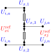
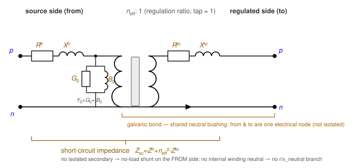

Regulators
A step-voltage regulator is an autotransformer: a series winding and a common (shunt) winding share a node, so the source (from) and regulated (to) sides are galvanically tied, not isolated like a two-winding transformer. It adjusts the voltage by a tap ratio close to 1. Two objects are provided: single_phase_autotransformer and the monolithic three-phase open_delta_regulator. Parts 1–5 state the foundational model; part 6 records the realisation. Symbols are defined in Notation.

A regulator admits two modelling views. (1) As a series branch — a two-port element on the feeder with a from (source) and a to (regulated) bus, power flowing through it exactly like a transformer. This is the natural power-systems reading for anyone used to galvanic (isolated) transformers, and it is what this specification adopts: the regulator is a branch in the network topology $\mathcal{T}^{X}$ with bus_from/bus_to. (2) As a shunt element exposing an extra terminal — because an autotransformer is not galvanically isolated, the regulated node is electrically part of the source bus, so one could keep a single bus, add a tapped terminal, and have the regulator inject a shunt current that sets that terminal's voltage.
We use the series view for consistency with the transformer element and the galvanic-transformer intuition, while still capturing the non-isolation exactly: the shared bushing is tied by the galvanic bond (a through-branch current, §4), so the from and to sides remain one electrical node even though they sit on two buses. The shunt view is the same physics re-partitioned — it trades the extra bus for an extra terminal — and is equally valid; a reader should not mistake the two-bus series form for galvanic isolation.
1. Data model
Entries under transformer.single_phase_autotransformer and transformer.open_delta_regulator, keyed by string ID $x$.
| Field | Type | Unit | Req. | Description |
|---|---|---|---|---|
bus_from, bus_to | string | – | ✔ | Source-side and regulated-side buses |
terminal_map_from, terminal_map_to | string[] | – | ✔ | Arity (2,2) single-phase; (4,4) open-delta |
tap_ratio | number / number[] | – | Regulation ratio (regulated/source), e.g. $[0.9,1.1]$; per-regulator array for open-delta | |
tap_ratio_min, tap_ratio_max | number | – | A free OPF variable when min < max; otherwise fixed | |
regulator_type | enum | – | ANSI A or B (see below) | |
connection | enum | – | (open-delta) | Phase-pair wiring ABBC / BCAC / CABA |
r_series_from/_to, x_series_from/_to | number | Ω | Series-winding leakage | |
g_no_load, b_no_load | number | S | No-load shunt at the from terminals | |
s_rating | number | VA | Rating | |
i_max_from, i_max_to | number[] | A | Per-conductor current limits |
2. Input symbols
| Field | Symbol | Notes |
|---|---|---|
tap_ratio | $\textcolor{red}{a}$ | regulated/source ratio |
regulator_type | — | selects $\textcolor{red}{n_{\text{eff}}}$ from $\textcolor{red}{a}$ |
r/x_series_* | $\textcolor{brown}{Z^{\text{fr}}_x},\ \textcolor{brown}{Z^{\text{to}}_x}$ | series leakage |
g/b_no_load | $\textcolor{brown}{Y_0}=\textcolor{red}{G_0}+\textcolor{brown}{j}\textcolor{red}{B_0}$ | no-load shunt |
The effective from→to ratio depends on the ANSI connection (which winding is the series winding):
\[\textcolor{red}{n_{\text{eff}}} = \begin{cases} \textcolor{red}{a} & \text{type B (series on source side, standard SVR)},\\ 1/\textcolor{red}{a} & \text{type A (series on regulated side)}. \end{cases}\]
3. Variables
Each regulating winding carries a series current $\textcolor{blue}{I_{x,\text{fr},k}}$ (from side) and $\textcolor{blue}{I_{x,\text{to},k}}$ (to side). Because the sides are galvanically tied, the shared bushing also carries a bond current (a through-branch current variable) — one per shared node. When the tap is free, $\textcolor{red}{n_{\text{eff}}}$ becomes a decision variable.
4. Equality constraints
Regulating winding
Across one winding spanning terminal pair $(p,q)$ on each side, the voltage and ampere-turn relations have the same form as the isolated single-phase transformer, with the combined leakage $\textcolor{brown}{Z_x}=\textcolor{brown}{Z^{\text{fr}}_x}+\textcolor{red}{n_{\text{eff}}}^2\textcolor{brown}{Z^{\text{to}}_x}$:
\[\textcolor{blue}{V^{\text{fr}}_{x,k}} - \textcolor{red}{n_{\text{eff}}}\,\textcolor{blue}{V^{\text{to}}_{x,k}} = \textcolor{brown}{Z_x}\,\textcolor{blue}{I_{x,\text{fr},k}}, \qquad \textcolor{red}{n_{\text{eff}}}\,\textcolor{blue}{I_{x,\text{fr},k}} + \textcolor{blue}{I_{x,\text{to},k}} = 0,\]
where $\textcolor{blue}{V^{\sigma}_{x,k}}$ is phase-to-neutral (single-phase L-N) or line-to-line (open-delta, and single-phase L-L). A lossless ideal regulator collapses to $\textcolor{blue}{V^{\text{to}}}=\textcolor{red}{n_{\text{eff}}}^{-1}\textcolor{blue}{V^{\text{fr}}}$.
The loss elements are two of the three in the transformer loss equivalent circuit: the series leakage $\textcolor{brown}{Z_x}=\textcolor{brown}{Z^{\text{fr}}_x}+\textcolor{red}{n_{\text{eff}}}^2\textcolor{brown}{Z^{\text{to}}_x}$ (from r/x_series_from, r/x_series_to) and the no-load shunt $\textcolor{brown}{Y_0}=\textcolor{red}{G_0}+\textcolor{brown}{j}\textcolor{red}{B_0}$ (from g_no_load, b_no_load). A regulator has no isolated secondary, so — unlike a transformer — the shunt sits on the from side; and it exposes no internal winding neutral, so there is no r/x_neutral grounding branch.

The one visible difference from the transformer circuit is the shared neutral rail: a transformer's two neutrals are isolated, whereas the regulator's are bonded into a single node — the graphical signature of an autotransformer.
The galvanic tie (what makes it a regulator)
The departure from the isolated model is at the shared node. The series and common windings share a bushing — the neutral for an L-N regulator, or the common phase for an open-delta bank — so both sides' return currents close there. When the shared reference $q$ is a single node, its KCL combines both returns:
\[\textcolor{blue}{I_{x,q}} + \textcolor{blue}{I_{x,\text{fr},k}} + \textcolor{blue}{I_{x,\text{to},k}} = 0 \ \Longleftrightarrow\ \textcolor{blue}{I_{x,q}} + (1-\textcolor{red}{n_{\text{eff}}})\,\textcolor{blue}{I_{x,\text{fr},k}} = 0.\]
When the reference is exposed as two data terminals (t_fr_q, t_to_q) on two buses, they are bonded by a zero-impedance through-branch — equal voltage plus a bond current — so the primary return closes at t_fr_q and the secondary at t_to_q while remaining electrically one node. The four terminal injections sum to zero, keeping the loss identity exact. The no-load shunt $\textcolor{brown}{Y_0}$ is placed across the from-side winding voltage.
Open-delta specifics
An open_delta_regulator is two line-to-line regulating windings across the phase pairs implied by connection (ABBC ⇒ regulators across $(a,b)$ and $(b,c)$; etc.), each obeying the regulating-winding relation above with its own $\textcolor{red}{n_{\text{eff}}}$. The phase common to both windings ($b$ in ABBC) is a copper straight-through: its from and to voltages are tied, $\textcolor{blue}{U_{i,b}}=\textcolor{blue}{U_{j,b}}$, with a wire current carrying the balance (the "common neutral" model that matches OpenDSS and field measurement). The third phase and neutral follow from KCL.
5. Inequality constraints
Cartesian variable bounds
Optional per-conductor boxes on the series-current components from i_max_from/i_max_to.
Engineering bounds
Per-winding current-magnitude circles, per side and conductor:
\[\textcolor{blue}{I_{x,\sigma,k}}\,(\textcolor{blue}{I_{x,\sigma,k}})^{*} \le (\textcolor{red}{I^{\max}_{x,\sigma,k}})^2.\]
6. Implementation in BMOPFTools
Realisation
Both regulator subtypes also have an exact nodal primitive admittance $\textcolor{brown}{\mathbf{Y}_x}$ (Yprim) — the autotransformer $2\times2$ core and the two line-to-line open-delta cores — given in closed form on the Transformer primitive admittance page.
- The shared regulating-winding relation is stamped by
transformer.jl:_add_regulating_winding!; it writes the to-side leakage via $\textcolor{blue}{I_{x,\text{to}}}$ so a free tap stays degree-2, and reduces to $\textcolor{brown}{Z_x}=\textcolor{brown}{Z^{\text{fr}}_x}+\textcolor{red}{n_{\text{eff}}}^2\textcolor{brown}{Z^{\text{to}}_x}$ at nominal. single_phase_autotransformer(_add_autotransformer!) — one winding across the from/to pair, the no-load shunt on the from side, and the galvanic bond (an extra from-side current index) tying the shared reference terminals. Getting the shared-node sign wrong yields negative regulator losses, so the tie is enforced explicitly.open_delta_regulator(_add_open_delta_regulator!) — two windings per theconnectionmap, each with its own tap ratio, plus the shared-phase straight-through (a further through-branch current) reproducing the common-neutral model.- ANSI type selects $\textcolor{red}{n_{\text{eff}}}=\textcolor{red}{a}$ (B) or $1/\textcolor{red}{a}$ (A); the tap ratio can be a fixed number or a free OPF variable (
tap_ratio_min/max).
Source map
| Element | Code location |
|---|---|
| Regulating winding (shared relation) | transformer.jl:_add_regulating_winding! |
| singlephaseautotransformer | transformer.jl:_add_autotransformer! |
| opendeltaregulator | transformer.jl:_add_open_delta_regulator! |
Step-voltage regulators (single_phase_autotransformer, open_delta_regulator) — galvanically-tied autotransformers with tap optimisation — are a BMOPFTools extension with no counterpart in the current PDF, and are modelled as a distinct element from the isolated transformers. Add them to the superseding spec as their own component.